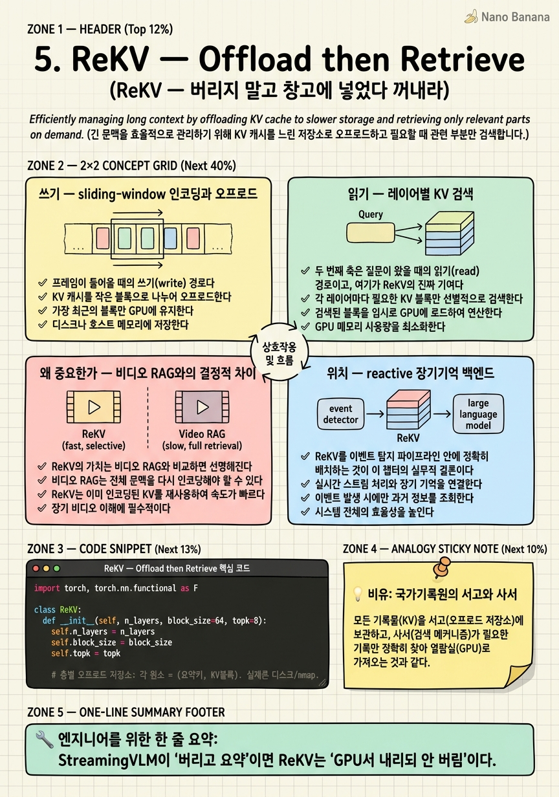

ReKV — Offload then Retrieve

🎯 학습 목표
- StreamingVLM(버림)과 ReKV(보관)의 철학 차이를 대비한다
- sliding-window 인코딩으로 쓰기 비용을 상수로 유지하는 방법을 안다
- 레이어별 KV 검색이 왜 층마다 따로 일어나야 하는지 설명한다
- ReKV가 비디오 RAG 대비 재인코딩 비용 0인 이유를 안다
- ReKV가 reactive 구조라 트리거 없이 장기기억 백엔드로 쓰이는 위치를 안다
4장 StreamingVLM은 "과거는 어차피 다 못 들고 다니니 버리자 — 텍스트 요약만 남기고"라는 철학이었다. ReKV(ICLR 2025)는 정확히 정반대에서 출발한다 — "GPU에서만 내리자. 버리진 말자."
두 논문은 같은 병목(무한 KV cache)을 공략하지만 해법이 대칭적이다. StreamingVLM은 GPU 메모리도 저장 공간도 상수로 묶는 대신 과거 시각 정보를 잃는다. ReKV는 GPU 메모리는 상수로 묶되 저장 공간은 선형으로 늘리는 대신 과거를 완전히 보존한다. 무엇을 희생하고 무엇을 지킬지의 선택이 다른 것이다.
ReKV의 핵심 통찰은 "한 번 계산한 KV를 두 번 계산하지 마라"다. 프레임을 인코딩하며 만든 KV cache를 버리는 대신 창고(RAM/디스크)에 차곡차곡 넣어두고, 질문이 오면 관련된 부분만 꺼내 재사용한다. 게다가 training-free — 기존 Video-LLM에 재학습 없이 붙는다. 이 챕터는 그 쓰기(오프로드)와 읽기(레이어별 검색) 두 축을 해부하고, 이벤트 탐지 파이프라인에서 ReKV가 차지하는 "사후 질의 백엔드"라는 자리를 짚는다.
핵심 내용
쓰기 — sliding-window 인코딩과 오프로드
ReKV의 첫 번째 축은 프레임이 들어올 때의 쓰기(write) 경로다.
프레임이 들어오는 대로 sliding-window attention으로 인코딩한다. 새 프레임은 최근 프레임들만 참조하므로 인코딩 비용이 일정하게 유지된다 — 여기까지는 상수 비용이다. 그런데 이때 생성된 KV cache를 버리지 않는다. 대신 GPU → CPU RAM → 디스크로 계층적으로 오프로드한다.
비유하면 이렇다. 책상(GPU 메모리)은 좁으니, 다 읽은 서류를 버리는 게 아니라 서랍(RAM)과 창고(디스크)에 차곡차곡 옮겨둔다. 책상 위는 늘 깔끔하게 유지되지만(GPU 메모리 상수), 창고는 시간이 갈수록 계속 커진다(저장 공간 선형 증가).
이 트레이드오프가 ReKV의 정체성이다.
| 자원 | StreamingVLM | ReKV | |---|---|---| | GPU 메모리 | 고정 | 고정 | | 저장 공간 | 고정 | 선형 증가 | | 과거 정보 | 텍스트 요약만 | 완전 보존 |
GPU라는 비싸고 좁은 자원은 상수로 지키되, 값싼 디스크를 늘려 과거를 통째로 보존하는 교환이다. 디스크는 GPU보다 훨씬 싸므로, "완전한 기억"이 필요한 응용에서는 합리적인 선택이 된다.
읽기 — 레이어별 KV 검색
두 번째 축은 질문이 왔을 때의 읽기(read) 경로이고, 여기가 ReKV의 진짜 기여다.
질문이 들어오면 전체 창고를 다 꺼내오는 게 아니라, 질문과 관련된 구간의 KV만 검색해서 GPU로 다시 올려 attention을 수행한다. 창고가 아무리 커도 GPU에 올리는 것은 관련 부분뿐이라, 응답 비용이 저장량에 비례해 폭발하지 않는다.
핵심 디테일은 이 검색이 레이어별(layer-wise)로 일어난다는 것이다. LLM의 각 층은 서로 다른 것에 주목한다 — 어떤 층은 물체의 외형에, 어떤 층은 동작에, 어떤 층은 공간 관계에 민감하다. 따라서 하나의 검색 결과를 모든 층에 똑같이 쓰면 각 층의 필요를 못 맞춘다.
ReKV는 층마다 질문 벡터와 그 층 KV의 유사도를 따로 계산해, 각 층에 필요한 블록을 각각 골라온다. 어떤 층에는 3분 구간의 KV를, 다른 층에는 20분 구간의 KV를 올리는 식이다. 이 레이어별 정밀 검색이 검색 정확도를 끌어올리고, 이후 "KV retrieval 계열"의 기준점이 되었다.
왜 중요한가 — 비디오 RAG와의 결정적 차이
ReKV의 가치는 비디오 RAG와 비교하면 선명해진다.
일반적인 비디오 RAG는 "관련 프레임을 찾아서 → 그 프레임을 다시 인코딩"한다. 그런데 다시 인코딩한다는 것은 찾아온 프레임에 대한 prefill을 또 지불한다는 뜻이다(1장의 prefill 비용을 상기하라). 검색은 싸도 재인코딩이 비싸다.
ReKV는 다르다. 이미 계산해둔 KV를 그대로 재사용하므로 재인코딩 비용이 0이다. "한 번 계산한 건 두 번 계산하지 않는다"가 이 논문의 비용 절감 원리다.
\[\text{비디오 RAG: } \text{검색} + \underbrace{\text{재인코딩(prefill)}}_{\text{비쌈}} \qquad \text{ReKV: } \text{검색} + \underbrace{\text{KV 로드}}_{\text{저렴}}\]
여기에 결정적 실용 이점이 하나 더 있다 — training-free다. ReKV는 기존 Video-LLM의 이미 학습된 attention을 그대로 활용하므로, 재학습 없이 붙는다. 4장 StreamingVLM이 정렬 학습을 요구하고, 7장 Flash-VStream이 전용 메모리 모듈 학습을 요구하는 것과 대비된다. 이식성(portability) 관점에서 ReKV는 Stage ② 중 가장 붙이기 쉬운 축에 속한다.
위치 — reactive 장기기억 백엔드
ReKV를 이벤트 탐지 파이프라인 안에 정확히 배치하는 것이 이 챕터의 실무적 결론이다.
ReKV는 본질적으로 reactive(수동적) 구조다. 스스로 "지금 이벤트다"라고 발화하는 트리거가 없다 — 질문이 와야 답한다. 따라서 ReKV 자체는 실시간 이벤트 탐지의 본체가 될 수 없다. 그것은 Stage ③(9·10장)의 몫이다.
대신 ReKV는 이벤트 탐지 이후의 사후 질의에서 빛난다. 예를 들어 트리거가 "수상한 사람 발견"을 잡은 뒤, 운영자가 "그 사람이 30분 전에는 뭘 했지?"라고 물으면 — 이 질의에 답하려면 30분 전의 완전한 시각 정보가 필요하다. StreamingVLM은 텍스트로만 요약해뒀으니 답할 수 없지만, ReKV는 그 시점의 KV를 창고에서 검색해 정밀하게 답한다.
즉 ReKV의 파이프라인 내 자리는 장기기억 백엔드 / 포렌식(forensic) 계층이다. 10장 최종 아키텍처에서 "포렌식이 필요한 배포라면 ReKV식 디스크 오프로드를 병행해 원본 KV를 창고에 보존"하는 선택지로 다시 등장한다.
한계도 명확하다. KV는 원본 영상보다 크다(토큰당 레이어 × 헤드 × 차원). 그래서 초장시간 저장은 부담이고, 검색 정확도가 답변 품질의 상한이 된다 — 창고에 다 있어도 못 찾으면 없는 것과 같다. 이 "다 보관하되 검색이 병목" 구조가, 6장 LiveVLM(창고에 넣기 전에 압축)의 출발점이 된다.
💡 비유로 이해하기
방대한 기록을 다루는 두 방식이 있다. StreamingVLM식 사무실은 책상 위 서류만 남기고 나머지는 요약 메모만 남긴 뒤 폐기한다 — 깔끔하지만 원본은 영영 사라진다. ReKV식 기록원은 다르다. 어떤 문서도 버리지 않고 지하 서고에 원본 그대로 보관한다. 책상(GPU)은 늘 비어 있지만, 서고(디스크)는 해마다 층이 늘어난다.
누군가 "3년 전 그 사건의 원본 기록을 보고 싶다"고 오면, 사서는 서고 전체를 끌어올리지 않는다. 청구 주제와 관련된 서가의 상자만 정확히 찾아 열람실로 올린다(검색 후 로드). 게다가 이 사서는 층마다 전문이 달라서 — 인명 담당, 지명 담당, 날짜 담당이 각자 자기 서가에서 관련 상자를 따로 찾아온다(레이어별 검색).
여기서 결정적 절약 — 일반 도서관(비디오 RAG)은 원본이 없어 관련 책을 다시 인쇄해야 하지만, 이 기록원은 원본이 그대로 있으니 꺼내오기만 하면 된다(재인코딩 0). 단, 서고는 원본이라 요약본보다 훨씬 넓은 공간을 먹고, 사서가 엉뚱한 상자를 찾아오면 아무리 완벽히 보관돼 있어도 헛일이다.
💻 코드 예시
ReKV의 쓰기(오프로드)와 읽기(레이어별 검색)를 골격만 구현해보자. KV는 블록 단위로 디스크에 내려두고, 질문이 오면 층마다 관련 블록만 골라 올린다.
import torch, torch.nn.functional as F
class ReKV:
def __init__(self, n_layers, block_size=64, topk=8):
self.n_layers = n_layers
self.block_size = block_size
self.topk = topk
# 층별 오프로드 저장소: 각 원소 = (요약키, KV블록). 실제론 디스크/mmap.
self.store = [[] for _ in range(n_layers)]
def write(self, layer_kv):
"""layer_kv[l] = (K,V) for 최근 window. 블록 단위로 오프로드."""
for l, (K, V) in enumerate(layer_kv):
for i in range(0, K.shape[0], self.block_size):
blk_k, blk_v = K[i:i+self.block_size], V[i:i+self.block_size]
summary = blk_k.mean(0) # 블록 대표 키(검색용 요약)
self.store[l].append((summary, blk_k, blk_v)) # GPU→RAM/디스크
def read(self, query_per_layer):
"""질문이 왔을 때 층마다 관련 KV 블록만 검색해 GPU로 로드."""
loaded = []
for l in range(self.n_layers):
q = query_per_layer[l] # 이 층의 질문 벡터
sims = torch.stack([F.cosine_similarity(q, s, dim=0)
for s, _, _ in self.store[l]])
idx = sims.topk(min(self.topk, len(sims))).indices # 층별 top-k 블록
K = torch.cat([self.store[l][i][1] for i in idx])
V = torch.cat([self.store[l][i][2] for i in idx])
loaded.append((K, V)) # 재인코딩 없이 그대로 재사용
return loaded
write는 매 프레임 KV를 block_size 단위로 잘라 각 블록의 평균 키(summary)와 함께 층별 store에 쌓는다 — 이게 GPU에서 RAM/디스크로 내리는 오프로드다. GPU엔 최근 윈도우만 남으니 메모리는 상수, store만 선형으로 커진다. 핵심은 read의 이중 루프다 — 각 층 l마다 그 층의 질문 벡터 q로 유사도를 계산해 층별로 다른 top-k 블록을 고른다. 어떤 층은 앞쪽 블록을, 어떤 층은 뒤쪽 블록을 올릴 수 있다. 그리고 고른 블록은 이미 계산된 K,V라 그대로 attention에 투입 — heavy_encode 같은 재인코딩 호출이 어디에도 없다는 점이 비디오 RAG 대비 핵심 절약이다.
🏭 현업에서의 평가
✅ 시니어가 보는 것
- 재인코딩 0(KV 재사용)이 비디오 RAG 대비 어디서 비용을 아끼는지 정확히 설명하는가
- GPU 상수/디스크 선형이라는 트레이드오프를 명시적으로 인지하는가
- 레이어별 검색의 근거(층마다 다른 주목)를 설명하는가
⚠️ 레드 플래그
- ReKV를 실시간 트리거로 오해 — reactive 구조임을 놓침
- KV가 원본 영상보다 크다는 저장 부담을 간과함
- 검색 정확도가 답변 품질의 상한이라는 점을 무시하고 '다 보관하니 완벽'이라 단언
🎤 예상 인터뷰 질문
- 비디오 RAG와 ReKV의 비용 구조를 prefill 관점에서 비교하라.
- 왜 KV 검색을 레이어별로 하는가? 단일 검색으로 통일하면 무엇이 나빠지는가?
- 10시간 스트림을 ReKV로 보관하면 무엇이 먼저 문제가 되는가? 어떻게 완화하겠는가?
✨ 핵심 요약
정반대 철학
StreamingVLM이 '버리고 요약'이면 ReKV는 'GPU서 내리되 안 버림'이다.
오프로드 쓰기
sliding-window로 상수 인코딩하고 KV를 GPU→RAM→디스크로 내린다.
레이어별 검색
층마다 주목 대상이 다르므로 질문 벡터로 층별 관련 블록을 따로 올린다.
재인코딩 0
이미 계산한 KV를 재사용 — 비디오 RAG의 prefill 재지불을 피한다.
training-free
기존 Video-LLM에 재학습 없이 붙어 이식성이 가장 높다.
사후 질의 백엔드
reactive 구조라 트리거는 없지만 '30분 전 뭘 했나'류 장기기억에 최적.
저장·검색 한계
KV는 원본보다 크고, 검색 정확도가 답변 품질의 상한이다 — LiveVLM의 출발점.